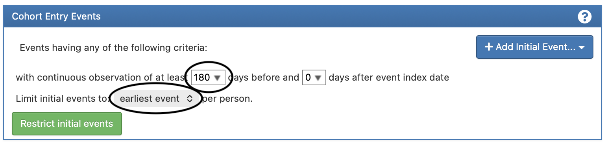

library(omock)
cdm <- mockCdmFromDataset(datasetName = "delphi-100k_5.4", source = "duckdb")CohortConstructor
Build and Curate Study Cohorts in R Using the OMOP Common Data Model
Motivation
A cohort is a group of individuals that satisfy some inclusion criteria within a defined time period (inclusion criteria + time).
It is the key and principal piece used in epidemiological studies. In the OMOP CDM we define a cohort a table with 4 columns:
cohort_definition_id: Unique identifier for each cohort in the table.
subject_id: Unique patient identifier.
cohort_start_date: Date when the person enters the cohort.
cohort_end_date: Date when the person exits the cohort.
Motivation: Build in a tidy way
- omopgenerics and CDMConnector define an ecosystem of R packages that allow us to interact with an OMOP CDM instance using packages such as dplyr and tidyr.
cdm$person# Source: table<person> [?? x 18]
# Database: DuckDB 1.5.0 [root@Darwin 25.3.0:R 4.4.1//private/var/folders/pl/k11lm9710hlgl02nvzx4z9wr0000gp/T/Rtmpzwkt6H/filea2315dbd0f7f.duckdb]
person_id gender_concept_id year_of_birth month_of_birth day_of_birth birth_datetime race_concept_id
<int> <int> <int> <int> <int> <dttm> <int>
1 6 8532 1963 12 31 1963-12-31 00:00:00 8516
2 123 8507 1950 4 12 1950-04-12 00:00:00 8527
3 129 8507 1974 10 7 1974-10-07 00:00:00 8527
4 16 8532 1971 10 13 1971-10-13 00:00:00 8527
5 65 8532 1967 3 31 1967-03-31 00:00:00 8516
6 74 8532 1972 1 5 1972-01-05 00:00:00 8527
7 42 8532 1909 11 2 1909-11-02 00:00:00 8527
8 187 8507 1945 7 23 1945-07-23 00:00:00 8527
9 18 8532 1965 11 17 1965-11-17 00:00:00 8527
10 111 8532 1975 5 2 1975-05-02 00:00:00 8527
# ℹ more rows
# ℹ 11 more variables: ethnicity_concept_id <int>, location_id <int>, provider_id <int>, care_site_id <int>,
# person_source_value <chr>, gender_source_value <chr>, gender_source_concept_id <int>, race_source_value <chr>,
# race_source_concept_id <int>, ethnicity_source_value <chr>, ethnicity_source_concept_id <int>Motivation: Build in a tidy way
Rows: ??
Columns: 3
Database: DuckDB 1.5.0 [root@Darwin 25.3.0:R 4.4.1//private/var/folders/pl/k11lm9710hlgl02nvzx4z9wr0000gp/T/Rtmpzwkt6H/filea2315dbd0f7f.duckdb]
$ person_id <int> 6, 16, 42, 18, 35, 40, 53, 9, 2, 49, 11, 61, 32, 43, 12, 7, 17, 41, 63, 19, 5, 30, 3, 36, 57, 1, 23,…
$ sex <int> 8532, 8532, 8532, 8532, 8532, 8507, 8507, 8532, 8532, 8507, 8507, 8532, 8507, 8532, 8532, 8532, 8532…
$ obs_start <date> 1963-12-31, 1971-10-14, 1909-11-03, 1965-11-17, 1960-03-22, 1951-12-05, 1962-08-15, 1978-07-20, 192…For more details on this approach please refer to the following book:
Burn, E., & Català, M. (2025). Tidy R programming with the OMOP Common Data Model (first edition). Zenodo. https://doi.org/10.5281/zenodo.17532124. Online version
Motivation: order of operations (ATLAS)
ATLAS is a user friendly interface used to build cohorts (https://atlas-demo.ohdsi.org):

Motivation: order of operations (ATLAS)
ATLAS is a user friendly interface used to build cohorts (https://atlas-demo.ohdsi.org):

Motivation: order of operations
cdm$my_cohort |>
# require 180 days of prior history
inner_join(
cdm$observation_period |>
select(
"subject_id" = "person_id",
"start_obs" = "observation_period_start_date",
"end_obs" = "observation_period_end_date"
),
by = "subject_id"
) |>
filter(start_obs + 180 <= cohort_start_date & cohort_start_date <= end_obs) |>
# restrict to only first event
group_by(cohort_definition_id, subject_id) |>
filter(cohort_start_date == min(cohort_start_date)) |>
ungroup()vs
cdm$my_cohort |>
# restrict to only first event
group_by(cohort_definition_id, subject_id) |>
filter(cohort_start_date == min(cohort_start_date)) |>
ungroup() |>
# require 180 days of prior history
inner_join(
cdm$observation_period |>
select(
"subject_id" = "person_id",
"start_obs" = "observation_period_start_date",
"end_obs" = "observation_period_end_date"
),
by = "subject_id"
) |>
filter(start_obs + 180 <= cohort_start_date & cohort_start_date <= end_obs)Motivation: common operations
cdm$my_cohort |>
# require 180 days of prior history
inner_join(
cdm$observation_period |>
select(
"subject_id" = "person_id",
"start_obs" = "observation_period_start_date",
"end_obs" = "observation_period_end_date"
),
by = "subject_id"
) |>
filter(start_obs + 180 <= cohort_start_date & cohort_start_date <= end_obs) |>
# restrict to only first event
group_by(cohort_definition_id, subject_id) |>
filter(cohort_start_date == min(cohort_start_date)) |>
ungroup()to
cdm$my_cohort |>
# require 180 days of prior history
requirePriorObservation(minPriorObservation = 180) |>
# restrict to only first event
requireIsFirstEntry()Motivation
Tidy way
Control order of operations
Record decisions and its impact in attrition
Flexibility
Reusability
Introduction
- CohortConstructor package is designed to support cohort building pipelines in R, using data mapped to the OMOP Common Data Model.
- The code is publicly available in OHDSI’s GitHub repository CohortConstructor.
- CohortConstructor v0.6.3 is available in CRAN.
- Vignettes with further information can be found in the package website.
OMOP Cohorts in R
OMOP Cohorts in R
The
<cohort_table>class is defined in the R packageomopgenerics.This is the class that
CohortConstructoruses, as well as other OMOP analytical packages.-
As defined in
omopgenerics, a<cohort_table>must have at least the following 4 columns (without any missing values in them):cohort_definition_id: Unique identifier for each cohort in the table.
subject_id: Unique patient identifier.
cohort_start_date: Date when the person enters the cohort.
cohort_end_date: Date when the person exits the cohort.
OMOP Cohorts in R
cdm$cohort# Source: table<results.test_cohort> [?? x 4]
# Database: DuckDB 1.5.0 [root@Darwin 25.3.0:R 4.4.1//private/var/folders/pl/k11lm9710hlgl02nvzx4z9wr0000gp/T/Rtmpzwkt6H/filea2315dbd0f7f.duckdb]
cohort_definition_id subject_id cohort_start_date cohort_end_date
<int> <int> <date> <date>
1 1 1744 2006-11-13 2006-11-22
2 1 2199 1991-01-05 1991-01-15
3 1 2647 1975-10-20 1975-10-31
4 1 2758 1985-11-08 1985-11-18
5 1 3718 1979-06-28 1979-07-07
6 1 3784 1972-08-12 1972-08-21
7 1 4027 2017-06-19 2017-06-28
8 1 4853 2015-04-04 2015-04-16
9 2 727 2003-01-01 2003-01-15
10 2 946 2009-01-06 2009-01-13
# ℹ more rowsOMOP Cohorts in R
Additionally, the <cohort_table> object has the following attributes:
- Settings: Relate each cohort definition ID with a cohort name and other variables that define the cohort.
settings(cdm$cohort)# A tibble: 2 × 4
cohort_definition_id cohort_name cdm_version vocabulary_version
<int> <chr> <chr> <chr>
1 1 viral_pharyngitis 5.3 v5.0 18-JAN-19
2 2 viral_sinusitis 5.3 v5.0 18-JAN-19 OMOP Cohorts in R
- Attrition: Store information on each inclusion criteria applied and how many records and subjects were kept after.
attrition(cdm$cohort)# A tibble: 8 × 7
cohort_definition_id number_records number_subjects reason_id reason excluded_records excluded_subjects
<int> <int> <int> <int> <chr> <int> <int>
1 1 10217 2606 1 Initial qualifying e… 0 0
2 1 10217 2606 2 Record in observation 0 0
3 1 10217 2606 3 Not missing record d… 0 0
4 1 10217 2606 4 Merge overlapping re… 0 0
5 2 17268 2686 1 Initial qualifying e… 0 0
6 2 17268 2686 2 Record in observation 0 0
7 2 17268 2686 3 Not missing record d… 0 0
8 2 17268 2686 4 Merge overlapping re… 0 0OMOP Cohorts in R
- Cohort count: Number of records and subjects for each cohort.
cohortCount(cdm$cohort)# A tibble: 2 × 3
cohort_definition_id number_records number_subjects
<int> <int> <int>
1 1 10217 2606
2 2 17268 2686OMOP Cohorts in R
- Cohort codelist: Codelists used to define entry events and inclusion criteria for each cohort.
attr(cdm$cohort, "cohort_codelist")# Source: table<results.test_cohort_codelist> [?? x 4]
# Database: DuckDB 1.5.0 [root@Darwin 25.3.0:R 4.4.1//private/var/folders/pl/k11lm9710hlgl02nvzx4z9wr0000gp/T/Rtmpzwkt6H/filea2315dbd0f7f.duckdb]
cohort_definition_id codelist_name concept_id codelist_type
<int> <chr> <int> <chr>
1 1 viral_pharyngitis 4112343 index event
2 2 viral_sinusitis 40481087 index event CohortConstructor pipeline
1) Create base cohorts
Cohorts defined using clinical concepts (e.g., asthma diagnoses) or demographics (e.g., females aged >18)
2) Inclusion criteria
Transform base cohorts to meet study-specific inclusion criteria.
3) Follow-up
Set follow-up for the cohort of interest (this can also be done at earlier stages).
Function Sets
Base cohorts Cohort construction based on clinical concepts or demographics.
Requirements and Filtering Demographic restrictions, event presence/absence conditions, and filtering specific records.
Update cohort entry and exit Adjusting entry and exit dates to align with study periods, observation windows, or key events.
Transformation and Combination Merging, stratifying, collapsing, matching, or intersecting cohorts.
Base cohorts
Functions to build base cohorts
Create the cdm_reference object
# Load relevant packages
library(CDMConnector)
library(duckdb)
library(CohortConstructor)
library(CodelistGenerator)
library(CohortCharacteristics)
library(dplyr)
library(gt)
library(here)
library(PatientProfiles)cdm <- mockCdmFromDataset(datasetName = "delphi-100k_5.4", source = "duckdb")Demographics based - Example
- Two cohorts, females and males, both aged 18 to 60 years old, with at least 365 days of previous observation in the database.
cdm$age_cohort <- demographicsCohort(
cdm = cdm,
ageRange = c(18, 60),
sex = c("Female", "Male"),
minPriorObservation = 365,
name = "age_cohort"
)
settings(x = cdm$age_cohort)# A tibble: 2 × 5
cohort_definition_id cohort_name age_range sex min_prior_observation
<int> <chr> <chr> <chr> <dbl>
1 1 demographics_1 18_60 Female 365
2 2 demographics_2 18_60 Male 365Demographics based - Example
cohortCount(cohort = cdm$age_cohort)# A tibble: 2 × 3
cohort_definition_id number_records number_subjects
<int> <int> <int>
1 1 23080 23080
2 2 20872 20872attrition(x = cdm$age_cohort)# A tibble: 12 × 7
cohort_definition_id number_records number_subjects reason_id reason excluded_records excluded_subjects
<int> <int> <int> <int> <chr> <int> <int>
1 1 99523 99523 1 Initial qualifying … 0 0
2 1 99523 99523 2 Non-missing sex 0 0
3 1 50046 50046 3 Sex requirement: Fe… 49477 49477
4 1 50046 50046 4 Non-missing year of… 0 0
5 1 23090 23090 5 Age requirement: 18… 26956 26956
6 1 23080 23080 6 Prior observation r… 10 10
7 2 99523 99523 1 Initial qualifying … 0 0
8 2 99523 99523 2 Non-missing sex 0 0
9 2 49477 49477 3 Sex requirement: Ma… 50046 50046
10 2 49477 49477 4 Non-missing year of… 0 0
11 2 21145 21145 5 Age requirement: 18… 28332 28332
12 2 20872 20872 6 Prior observation r… 273 273Demographics based - Example
To better visualise the attrition, we can use the package CohortCharacteristics to create a formatted table:
result <- summariseCohortAttrition(cohort = cdm$age_cohort)
tableCohortAttrition(result = result)| Reason |
Variable name
|
|||
|---|---|---|---|---|
| number_records | number_subjects | excluded_records | excluded_subjects | |
| delphi-100k; demographics_1 | ||||
| Initial qualifying events | 99,523 | 99,523 | 0 | 0 |
| Non-missing sex | 99,523 | 99,523 | 0 | 0 |
| Sex requirement: Female | 50,046 | 50,046 | 49,477 | 49,477 |
| Non-missing year of birth | 50,046 | 50,046 | 0 | 0 |
| Age requirement: 18 to 60 | 23,090 | 23,090 | 26,956 | 26,956 |
| Prior observation requirement: 365 days | 23,080 | 23,080 | 10 | 10 |
| delphi-100k; demographics_2 | ||||
| Initial qualifying events | 99,523 | 99,523 | 0 | 0 |
| Non-missing sex | 99,523 | 99,523 | 0 | 0 |
| Sex requirement: Male | 49,477 | 49,477 | 50,046 | 50,046 |
| Non-missing year of birth | 49,477 | 49,477 | 0 | 0 |
| Age requirement: 18 to 60 | 21,145 | 21,145 | 28,332 | 28,332 |
| Prior observation requirement: 365 days | 20,872 | 20,872 | 273 | 273 |
Concept based - Example
Let’s create a cohort of medications that contains two drugs: diclofenac, and acetaminophen.
- Get relevant codelists with
CodelistGenerator
drug_codes <- getDrugIngredientCodes(
cdm = cdm,
name = c("diclofenac", "acetaminophen"),
nameStyle = "{concept_name}"
)
drug_codes
- acetaminophen (24846 codes)
- diclofenac (12663 codes)Concept based - Example
- Create concept based cohorts
cdm$medications <- conceptCohort(
cdm = cdm,
conceptSet = drug_codes,
name = "medications"
)
settings(x = cdm$medications)# A tibble: 2 × 4
cohort_definition_id cohort_name cdm_version vocabulary_version
<int> <chr> <chr> <chr>
1 1 acetaminophen 5.4 v5.0 27-AUG-25
2 2 diclofenac 5.4 v5.0 27-AUG-25 Concept based - Example
- Attrition
| Reason |
Variable name
|
|||
|---|---|---|---|---|
| number_records | number_subjects | excluded_records | excluded_subjects | |
| acetaminophen | ||||
| Initial qualifying events | 4,164 | 1,407 | 0 | 0 |
| Record in observation | 4,164 | 1,407 | 0 | 0 |
| Not missing record date | 4,164 | 1,407 | 0 | 0 |
| Merge overlapping records | 4,164 | 1,407 | 0 | 0 |
| diclofenac | ||||
| Initial qualifying events | 121 | 64 | 0 | 0 |
| Record in observation | 121 | 64 | 0 | 0 |
| Not missing record date | 121 | 64 | 0 | 0 |
| Merge overlapping records | 121 | 64 | 0 | 0 |
Concept based - Example
- Cohort codelist as an attribute
attr(cdm$medications, "cohort_codelist")# Source: table<medications_codelist> [?? x 4]
# Database: DuckDB 1.5.0 [root@Darwin 25.3.0:R 4.4.1//Users/martics/Documents/delphi-100k_5.4_1.5.duckdb]
cohort_definition_id codelist_name concept_id codelist_type
<int> <chr> <int> <chr>
1 1 acetaminophen 587290 index event
2 1 acetaminophen 587473 index event
3 1 acetaminophen 587705 index event
4 1 acetaminophen 587929 index event
5 1 acetaminophen 588401 index event
6 1 acetaminophen 588590 index event
7 1 acetaminophen 588717 index event
8 1 acetaminophen 589218 index event
9 1 acetaminophen 589245 index event
10 1 acetaminophen 589441 index event
# ℹ more rowsMeasurement based - Example
Let’s create a cohort of hypertension defined as two records of high pressure separated by less than a year. We will start identifying the measurement records that satisfy our criteria
- Get relevant codelists with
CodelistGenerator
systBP <- getCandidateCodes(cdm = cdm, keywords = "Systolic blood pressure", domains = "measurement")
systBP# A tibble: 145 × 6
concept_id found_from concept_name domain_id vocabulary_id standard_concept
<int> <chr> <chr> <chr> <chr> <chr>
1 608615 From initial search NPEWS (National Paediatric Early Warning Sco… Measurem… SNOMED S
2 903107 From initial search Computed blood pressure systolic and diastol… Measurem… PPI S
3 903118 From initial search Computed systolic blood pressure, mean of 2n… Measurem… PPI S
4 1076804 From initial search Average ambulatory systolic blood pressure Measurem… SNOMED S
5 1076806 From initial search Average ambulatory day interval systolic blo… Measurem… SNOMED S
6 1076808 From initial search Average ambulatory night interval systolic b… Measurem… SNOMED S
7 3000054 From initial search Umbilical artery Systolic blood pressure Measurem… LOINC S
8 3000368 From initial search Left pulmonary artery Systolic blood pressure Measurem… LOINC S
9 3000605 From initial search Systolic blood pressure--expiration Measurem… LOINC S
10 3000653 From initial search Renal artery - right Systolic blood pressure Measurem… LOINC S
# ℹ 135 more rowssystBP <- list(syst_blood_presure = systBP$concept_id)Measurement based - Example
- Create measurement based cohorts
cdm$hyp_sbp <- measurementCohort(
cdm = cdm,
conceptSet = systBP,
name = "hyp_sbp",
valueAsNumber = list("syst_blood_presure" = list("8876" = c(140, 9999)))
)
settings(x = cdm$hyp_sbp)# A tibble: 1 × 4
cohort_definition_id cohort_name cdm_version vocabulary_version
<int> <chr> <chr> <chr>
1 1 syst_blood_presure 5.4 v5.0 27-AUG-25 Measurement based - Example
- Attrition
| Reason |
Variable name
|
|||
|---|---|---|---|---|
| number_records | number_subjects | excluded_records | excluded_subjects | |
| syst_blood_presure | ||||
| Initial qualifying events | 88 | 71 | 0 | 0 |
| Record in observation | 88 | 71 | 0 | 0 |
| Not missing record date | 88 | 71 | 0 | 0 |
| Drop duplicate records | 88 | 71 | 0 | 0 |
Measurement based - Example
- Cohort codelist as an attribute
attr(cdm$hyp_sbp, "cohort_codelist")# Source: table<hyp_sbp_codelist> [?? x 4]
# Database: DuckDB 1.5.0 [root@Darwin 25.3.0:R 4.4.1//Users/martics/Documents/delphi-100k_5.4_1.5.duckdb]
cohort_definition_id codelist_name concept_id codelist_type
<int> <chr> <int> <chr>
1 1 syst_blood_presure 608615 index event
2 1 syst_blood_presure 903107 index event
3 1 syst_blood_presure 903118 index event
4 1 syst_blood_presure 1076804 index event
5 1 syst_blood_presure 1076806 index event
6 1 syst_blood_presure 1076808 index event
7 1 syst_blood_presure 3000054 index event
8 1 syst_blood_presure 3000368 index event
9 1 syst_blood_presure 3000605 index event
10 1 syst_blood_presure 3000653 index event
# ℹ more rowsYour turn!
Get Started: Create the cdm_reference object
# Load relevant packages
library(CDMConnector)
library(duckdb)
library(CohortConstructor)
library(CodelistGenerator)
library(CohortCharacteristics)
library(dplyr)
library(gt)
library(here)
library(PatientProfiles)
cdm <- mockCdmFromDataset(datasetName = "delphi-100k_5.4", source = "duckdb")Exercise 1 - Base cohorts
Create a cohort of aspirin use.
- How many records does it have? And how many subjects?
| CDM name | Variable name | Estimate name |
Cohort name
|
|---|---|---|---|
| aspirin | |||
| delphi-100k | Number records | N | 2,362 |
| Number subjects | N | 978 |
💡 Click to see solution
aspirin <- getDrugIngredientCodes(
cdm = cdm, name = "aspirin", nameStyle = "{concept_name}"
)
cdm$aspirin <- conceptCohort(cdm = cdm, conceptSet = aspirin, name = "aspirin")
counts <- summariseCohortCount(cohort = cdm$aspirin)
tableCohortCount(result = counts)Requirements and Filtering
Functions to apply requirements and filter
-
On demographics
-
On cohort entries
-
Require presence or absence based on other cohorts, concepts, and tables
-
Other
requireMincohortCount(cohort = )
Requirement functions - Example
-
require functions eliminate the records that do not satisfy the inclusion criteria at
indexDate.
-
We can apply different inclusion criteria using CohortConstructor’s functions in a pipe-line fashion. For instance, in what follows we require
only first record per person
subjects 18 years old or more at cohort start date
only females
at least 30 days of prior observation at cohort start date
cdm$medications_requirement <- cdm$medications |>
requireIsFirstEntry(name = "medications_requirement") |>
requireDemographics(
ageRange = list(c(18, 150)),
sex = "Female",
minPriorObservation = 30
)Requirement functions - Example
Attrition Acetaminophen
| Reason |
Variable name
|
|||
|---|---|---|---|---|
| number_records | number_subjects | excluded_records | excluded_subjects | |
| acetaminophen | ||||
| Initial qualifying events | 4,164 | 1,407 | 0 | 0 |
| Record in observation | 4,164 | 1,407 | 0 | 0 |
| Not missing record date | 4,164 | 1,407 | 0 | 0 |
| Merge overlapping records | 4,164 | 1,407 | 0 | 0 |
| Restricted to first entry | 1,407 | 1,407 | 2,757 | 0 |
| Age requirement: 18 to 150 | 618 | 618 | 789 | 789 |
| Sex requirement: Female | 120 | 120 | 498 | 498 |
| Prior observation requirement: 30 days | 120 | 120 | 0 | 0 |
| Future observation requirement: 0 days | 120 | 120 | 0 | 0 |
Requirement functions - Example
- Now, we only want to keep those exposures coinciding with at least one healthcare visit on that same day:
cdm$medications_requirement <- cdm$medications_requirement |>
requireTableIntersect(
tableName = "visit_occurrence",
window = c(0, 0),
intersections = c(1, Inf)
)Requirement functions - Example
Attrition Acetaminophen
| Reason |
Variable name
|
|||
|---|---|---|---|---|
| number_records | number_subjects | excluded_records | excluded_subjects | |
| acetaminophen | ||||
| Initial qualifying events | 4,164 | 1,407 | 0 | 0 |
| Record in observation | 4,164 | 1,407 | 0 | 0 |
| Not missing record date | 4,164 | 1,407 | 0 | 0 |
| Merge overlapping records | 4,164 | 1,407 | 0 | 0 |
| Restricted to first entry | 1,407 | 1,407 | 2,757 | 0 |
| Age requirement: 18 to 150 | 618 | 618 | 789 | 789 |
| Sex requirement: Female | 120 | 120 | 498 | 498 |
| Prior observation requirement: 30 days | 120 | 120 | 0 | 0 |
| Future observation requirement: 0 days | 120 | 120 | 0 | 0 |
| In table visit_occurrence between 0 & 0 days relative to cohort_start_date between 1 and Inf | 120 | 120 | 0 | 0 |
Your turn!
Exercise 2 - Requirement and filtering
Create a new cohort named “aspirin_last” by applying the following criteria to the base aspirin cohort:
Include only the last drug exposure for each subject.
Include exposures that start between January 1, 1960, and December 31, 1979.
Exclude individuals with an amoxicillin exposure in the 7 days prior to the aspirin exposure.
💡 Click to see solution
amoxicillin <- getDrugIngredientCodes(
cdm = cdm, name = "amoxicillin", nameStyle = "{concept_name}"
)
cdm$aspirin_last <- cdm$aspirin |>
requireIsLastEntry(name = "aspirin_last") |>
requireInDateRange(dateRange = as.Date(c("1960-01-01", "1979-12-31"))) |>
requireConceptIntersect(
conceptSet = amoxicillin,
window = list(c(-7, 0)),
intersections = 0
)
result <- summariseCohortAttrition(cdm$aspirin_last)
tableCohortAttrition(result = result)Move to the next slide to see the attrition.
Exercise 2 - Requirement and filtering
| Reason |
Variable name
|
|||
|---|---|---|---|---|
| number_records | number_subjects | excluded_records | excluded_subjects | |
| delphi-100k; aspirin | ||||
| Initial qualifying events | 2,362 | 978 | 0 | 0 |
| Record in observation | 2,362 | 978 | 0 | 0 |
| Not missing record date | 2,362 | 978 | 0 | 0 |
| Merge overlapping records | 2,362 | 978 | 0 | 0 |
| Restricted to last entry | 978 | 978 | 1,384 | 0 |
| cohort_start_date after 1960-01-01 | 978 | 978 | 0 | 0 |
| cohort_start_date before 1979-12-31 | 0 | 0 | 978 | 978 |
| Not in concept amoxicillin between -7 & 0 days relative to cohort_start_date | 0 | 0 | 0 | 0 |
Update cohort entry and exit
Functions to update cohort start and end dates
-
Cohort entry
-
Trim start and end dates
-
Pad start and end dates
Update cohort entry and exit - Example
We can trim start and end dates to match demographic requirements.
-
For instance, cohort dates can be trimmed so the subject contributes time while:
Aged 20 to 40 years old
Prior observation of at least 365 days
cdm$medications_trimmed <- cdm$medications |>
trimDemographics(
ageRange = list(c(20, 40)),
minPriorObservation = 365,
name = "medications_trimmed"
)Update cohort entry and exit - Example
| Reason |
Variable name
|
|||
|---|---|---|---|---|
| number_records | number_subjects | excluded_records | excluded_subjects | |
| acetaminophen | ||||
| Initial qualifying events | 4,164 | 1,407 | 0 | 0 |
| Record in observation | 4,164 | 1,407 | 0 | 0 |
| Not missing record date | 4,164 | 1,407 | 0 | 0 |
| Merge overlapping records | 4,164 | 1,407 | 0 | 0 |
| Non-missing year of birth | 4,164 | 1,407 | 0 | 0 |
| Age requirement: 20 to 40 | 1,405 | 479 | 2,759 | 928 |
| Prior observation requirement: 365 days | 1,405 | 479 | 0 | 0 |
Your turn!
Exercise 3 - Update cohort entry and exit
Create a cohort of ibuprofen. From it, create an “ibuprofen_death” cohort which includes only subjects that have a future record of death in the database, and update cohort end date to be the death date.
💡 Click to see solution
ibuprofen <- getDrugIngredientCodes(
cdm = cdm, name = "ibuprofen", nameStyle = "{concept_name}"
)
cdm$ibuprofen <- conceptCohort(
cdm = cdm, conceptSet = ibuprofen, name = "ibuprofen"
)
cdm$ibuprofen_death <- cdm$ibuprofen |>
exitAtDeath(requireDeath = TRUE, name = "ibuprofen_death")
result <- summariseCohortAttrition(cdm$ibuprofen_death)
tableCohortAttrition(result = result)Move to the next slide to see the attrition.
Exercise 3 - Update cohort entry and exit
| Reason |
Variable name
|
|||
|---|---|---|---|---|
| number_records | number_subjects | excluded_records | excluded_subjects | |
| delphi-100k; ibuprofen | ||||
| Initial qualifying events | 7,751 | 2,216 | 0 | 0 |
| Record in observation | 7,751 | 2,216 | 0 | 0 |
| Not missing record date | 7,751 | 2,216 | 0 | 0 |
| Merge overlapping records | 7,746 | 2,216 | 5 | 0 |
| No death recorded | 176 | 57 | 7,570 | 2,159 |
| Exit at death | 57 | 57 | 119 | 0 |
Transformation and Combination
Functions for Cohort Transformation and Combination
-
Split cohorts
-
Combine cohorts
-
Filter cohorts
-
Match cohorts
-
Concatenate entries
-
Copy and rename cohorts
Cohort combinations - Example
- Collapse drug exposures that are within a gap of 7 days.

Cohort combinations - Example
cdm$medications_collapsed <- cdm$medications |>
collapseCohorts(gap = 7, name = "medications_collapsed")| Reason |
Variable name
|
|||
|---|---|---|---|---|
| number_records | number_subjects | excluded_records | excluded_subjects | |
| acetaminophen | ||||
| Initial qualifying events | 4,164 | 1,407 | 0 | 0 |
| Record in observation | 4,164 | 1,407 | 0 | 0 |
| Not missing record date | 4,164 | 1,407 | 0 | 0 |
| Merge overlapping records | 4,164 | 1,407 | 0 | 0 |
| Collapse cohort with a gap of 7 days. | 2,268 | 1,407 | 1,896 | 0 |
Cohort combinations - Example
- Create a new cohort that contains people who had an exposure to both diclofenac and acetaminophen at the same time using.

Cohort combinations - Example
cdm$intersection <- cdm$medications_collapsed |>
intersectCohorts(name = "intersection")
settings(x = cdm$intersection)# A tibble: 1 × 5
cohort_definition_id cohort_name gap acetaminophen diclofenac
<int> <chr> <dbl> <dbl> <dbl>
1 1 acetaminophen_diclofenac 0 1 1Your turn!
Exercise 4 - Transformation and Combination
From the ibuprofen base cohort (not subseted to death), create five separate cohorts. Each cohort should include records for one specific year from the following list: 1975, 1976, 1977, 1978, 1979, and 1980.
- How many records and subjects are in each cohort?
💡 Click to see solution
cdm$ibuprofen_years <- cdm$ibuprofen |>
yearCohorts(years = 1975:1980, name = "ibuprofen_years")
counts <- summariseCohortCount(cohort = cdm$ibuprofen_years)
tableCohortCount(result = counts)| CDM name | Variable name | Estimate name |
Cohort name
|
|||||
|---|---|---|---|---|---|---|---|---|
| ibuprofen_1975 | ibuprofen_1976 | ibuprofen_1977 | ibuprofen_1978 | ibuprofen_1979 | ibuprofen_1980 | |||
| delphi-100k | Number subjects | N | 0 | 0 | 0 | 0 | 0 | 0 |
| Number records | N | 0 | 0 | 0 | 0 | 0 | 0 | |
Complex cohort 1
- We want to define a cohort of individuals taking
acetaminophenandibuprofen(prescriptions separated by 90 days or less are concatenated in a unique era of exposure) with at least 365 days of prior history, not taking opoiods on index date and censor individual if they start taking opioids.
Complex cohort 1
codelist <- getDrugIngredientCodes(
cdm = cdm,
name = c("acetaminophen", "ibuprofen"),
nameStyle = "{concept_name}"
)
opioids <- getDrugIngredientCodes(
cdm = cdm,
name = c("morphine", "tramadol", "codeine"),
nameStyle = "{concept_name}"
) |>
unionCodelists()
cdm$drugs <- conceptCohort(
cdm = cdm,
conceptSet = codelist,
name = "drugs",
exit = "event_end_date"
) |>
# collapse in 90 days eras
collapseCohorts(gap = 90) |>
# intersect both cohorts
intersectCohorts() |>
# min prior observation
requirePriorObservation(minPriorObservation = 365) |>
# require no opioids
requireConceptIntersect(
conceptSet = opioids,
window = c(0, 0),
intersections = 0
) |>
# add start opioids date
addConceptIntersectDate(
conceptSet = opioids,
window = c(1, Inf),
order = "first",
nameStyle = "start_opioids",
name = "drugs"
) |>
exitAtFirstDate(dateColumns = c("start_opioids", "cohort_end_date"))
cohortCount(cdm$drugs)# A tibble: 1 × 3
cohort_definition_id number_records number_subjects
<int> <int> <int>
1 1 8 7Complex cohort 2
-
Hypertension cohort defined as:
Two records of systolic blood pressure higher than 140 separated less than 365 days apart.
Two records of diastolic blood pressure higher than 90 separated less than 365 days apart.
Record of hypertension as a condition.
Follow individuals till end of observation
Complex cohort 2
# concept search
systBP <- getCandidateCodes(cdm = cdm, keywords = "Systolic blood pressure", domains = "measurement")
diaBP <- getCandidateCodes(cdm = cdm, keywords = "Diastolic blood pressure", domains = "measurement")
hyp <- getCandidateCodes(cdm = cdm, keywords = "hypertension", domains = "condition")
codelist <- list(
syst_blood_presure = systBP$concept_id,
dia_blood_presure = diaBP$concept_id,
hyp = hyp$concept_id
)
# systolic cohort
cdm$syst_measurement <- measurementCohort(
cdm = cdm,
conceptSet = codelist["syst_blood_presure"],
name = "syst_measurement",
valueAsNumber = list("syst_blood_presure" = list("8876" = c(140, 9999)))
) |>
# require prior record in 365 days before
requireCohortIntersect(
targetCohortTable = "syst_measurement",
window = c(-365, -1),
intersections = c(1, Inf)
)
# diastolic cohort
cdm$dia_measurement <- measurementCohort(
cdm = cdm,
conceptSet = codelist["dia_blood_presure"],
name = "dia_measurement",
valueAsNumber = list("dia_blood_presure" = list("8876" = c(90, 9999)))
) |>
# require prior record in 365 days before
requireCohortIntersect(
targetCohortTable = "dia_measurement",
window = c(-365, -1),
intersections = c(1, Inf)
)
# condition cohort
cdm$hyp_condition <- conceptCohort(
cdm = cdm,
conceptSet = codelist["hyp"],
name = "hyp_condition"
)
# bind all cohorts together
cdm <- bind(cdm$syst_measurement, cdm$dia_measurement, cdm$hyp_condition, name = "hypertension")
# end of observation
cdm$hypertension <- cdm$hypertension |>
exitAtObservationEnd() |>
# merge cohorts together
unionCohorts()
cohortCount(cdm$hypertension)# A tibble: 1 × 3
cohort_definition_id number_records number_subjects
<int> <int> <int>
1 1 743 743[Optional] Exercise 5
Use CohortConstructor to create a cohort with the following criteria:
Users of diclofenac
Females aged 16 or older
With at least 365 days of continuous observation prior to exposure
Without prior exposure to amoxicillin
With cohort exit defined as first discontinuation of exposure. An exposure being define as recorded exposures within 7-days gap
Move to the next slide to see the attrition.
[Optional] Exercise 5
Move to the next slide to see the solution.
| Reason |
Variable name
|
|||
|---|---|---|---|---|
| number_records | number_subjects | excluded_records | excluded_subjects | |
| delphi-100k; diclofenac | ||||
| Initial qualifying events | 121 | 64 | 0 | 0 |
| Record in observation | 121 | 64 | 0 | 0 |
| Not missing record date | 121 | 64 | 0 | 0 |
| Merge overlapping records | 121 | 64 | 0 | 0 |
| Age requirement: 16 to 150 | 75 | 33 | 46 | 31 |
| Sex requirement: Female | 24 | 13 | 51 | 20 |
| Prior observation requirement: 365 days | 23 | 12 | 1 | 1 |
| Future observation requirement: 0 days | 23 | 12 | 0 | 0 |
| Not in concept amoxicillin between -Inf & -1 days relative to cohort_start_date | 23 | 12 | 0 | 0 |
| Collapse cohort with a gap of 7 days. | 20 | 12 | 3 | 0 |
| Restricted to first entry | 12 | 12 | 8 | 0 |
[Optional] Exercise 5
💡 Click to see solution
amoxicillin <- getDrugIngredientCodes(
cdm = cdm,
name = c("amoxicillin"),
nameStyle = "{concept_name}"
)
diclofenac <- getDrugIngredientCodes(
cdm = cdm,
name = "diclofenac",
nameStyle = "{concept_name}"
)
cdm$diclofenac <- conceptCohort(
cdm = cdm,
conceptSet = diclofenac,
name = "diclofenac"
) |>
requireDemographics(
sex = "Female",
ageRange = list(c(16, 150)),
minPriorObservation = 365
) |>
requireConceptIntersect(
conceptSet = amoxicillin,
window = list(c(-Inf, -1)),
intersections = 0
) |>
collapseCohorts(gap = 7) |>
requireIsFirstEntry()
result <- summariseCohortAttrition(cdm$diclofenac)
tableCohortAttrition(result = result)Real study code
Lets see the code of a real study that we are conducting right now where we create 37 cohorts (with multiple inclusion and exclusion criteria) in less than 200 lines of code.